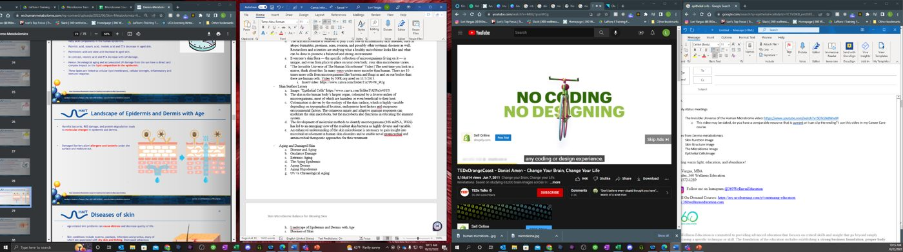
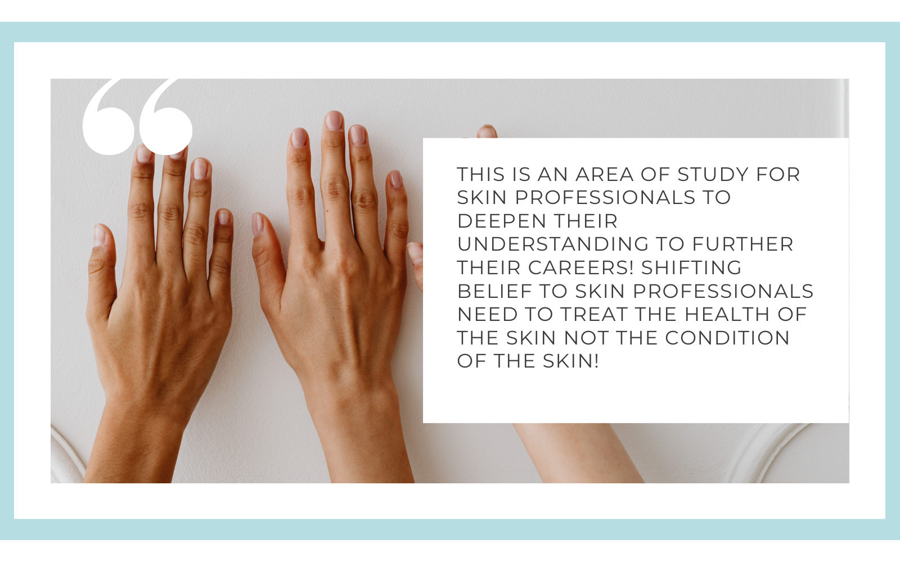

Case study 01 Instructional design
From content
to course.
A learner-centered online course built from complex source material, subject-matter expertise, and a clear plan for application.
- 26
- pages of source content
- 13
- learning modules
- 36
- expert notes resolved

01 The challenge
A strong subject matter expert needs an equally strong learning structure.
The original content was detailed, credible, and full of useful information. The design problem was to turn it into a self-paced experience that gave learners a clear path, practical confidence, and a reason to keep moving.
- SourceSpecialist content with complex concepts and dense references
- AudienceProfessionals who need clarity they can apply in practice
- GoalMake the content easier to follow, retain, and use
02 Audit the content
Find the learning inside the information.
First came a close read of the existing material. Content was grouped by decision, action, and supporting knowledge so the course could lead with what learners needed most.
That audit surfaced the strongest examples, the missing bridges between ideas, and the places where visual explanation would do more than another paragraph.


03 Structure the learning
Build a route that makes the next idea obvious.
The course architecture translated the audit into a deliberate sequence: orient the learner, explain the concept, show it in context, and create a moment to check understanding.
Each module earned its place in the journey and gave the learner a clear reason to continue.

04 Storyboard every screen
Make the media choices deliberate.
A storyboard creates agreement before development begins. Each screen identifies the learning purpose, content treatment, interaction, and visual direction so the finished course remains focused on what the learner should notice.
Open a curriculum sample

05 The result
A course that feels as purposeful as the expertise inside it.
By giving structure to the source material before styling the experience, the finished course became easier to navigate, more engaging to complete, and ready to support application in the real world.
- Modular structure that supports focused learning
- Consistent visual language across the experience
- Content decisions grounded in learner needs
- Clear moments for reflection and knowledge checking